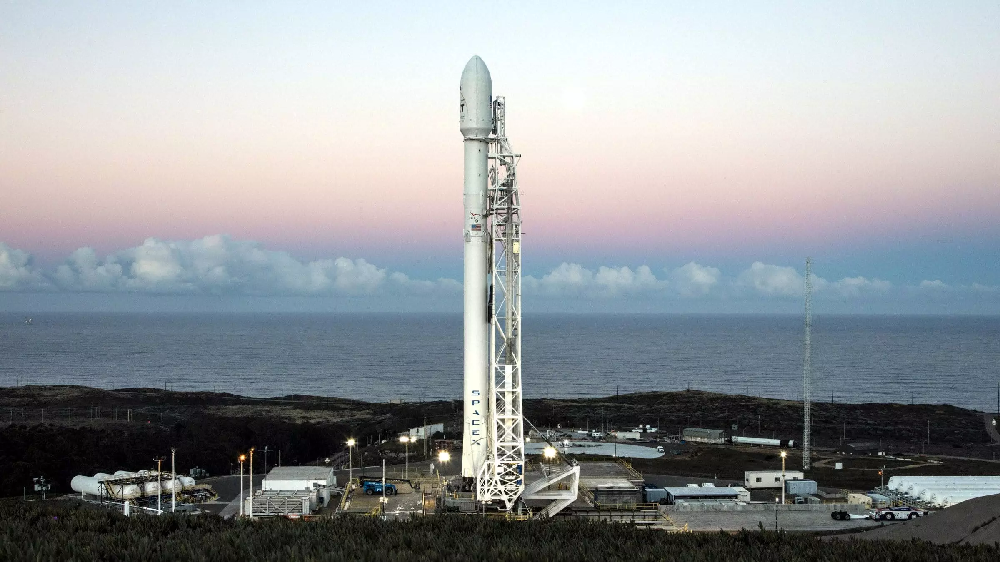

In fact, rockets work more efficiently in the vacuum of space than in an
atmosphere. Multistage rockets are capable of attaining escape velocity
from Earth and therefore can achieve unlimited maximum altitude.
Compared with airbreathing engines, rockets are lightweight and powerful
and capable of generating large accelerations. To control their flight,
rockets rely on momentum, airfoils, auxiliary reaction engines,
gimballed thrust, momentum wheels, deflection of the exhaust stream,
propellant flow, spin, or gravity.

"Astronaut" technically applies to all human space travelers regardless
of nationality or allegiance; however, astronauts fielded by Russia or
the Soviet Union are typically known instead as cosmonauts (from the
Russian "kosmos" (космос), meaning "space", also borrowed from Greek) in
order to distinguish them from American or otherwise NATO-oriented space
travellers. Comparatively recent developments in manned spaceflight made
by China have led to the rise of the term taikonaut (from the Mandarin
"tàikōng" (太空), meaning "space"), although its use is somewhat
informal and its origin is unclear. In Mainland China, the People's
Liberation Army Astronaut Corps astronauts and their foreign
counterparts are all officially called hángtiānyuán (航天员, meaning
"heaven navigator" or literally "heaven-sailing staff").
Astronaut
is a person trained, equipped, and deployed by a human spaceflight
program to serve as a commander or crew member aboard a spacecraft.
Although generally reserved for professional space travelers, the
terms are sometimes applied to anyone who travels into space,
including scientists, politicians, journalists and tourists.
Definition
As of 17 November 2016, 552 people from 36 countries have reached 100
km (62 mi) or more in altitude, of whom 549 reached low Earth orbit or
beyond. Of these, 24 people have traveled beyond low Earth orbit,
either to lunar orbit, the lunar surface, or, in one case, a loop
around the Moon. Three of the 24—Jim Lovell, John Young and Eugene
Cernan—did so twice.
Parastronaut
For its 2022 Astronaut Group, ESA envisions recruiting an astronaut
with a physical disability, a category they called "parastronauts",
with the intention but not guarantee of spaceflight. The categories of
disability considered for the program were individuals with lower limb
deficiency (either through amputation or congenital), leg length
difference, or a short stature (less than 130 centimetres or 4 feet 3
inches)